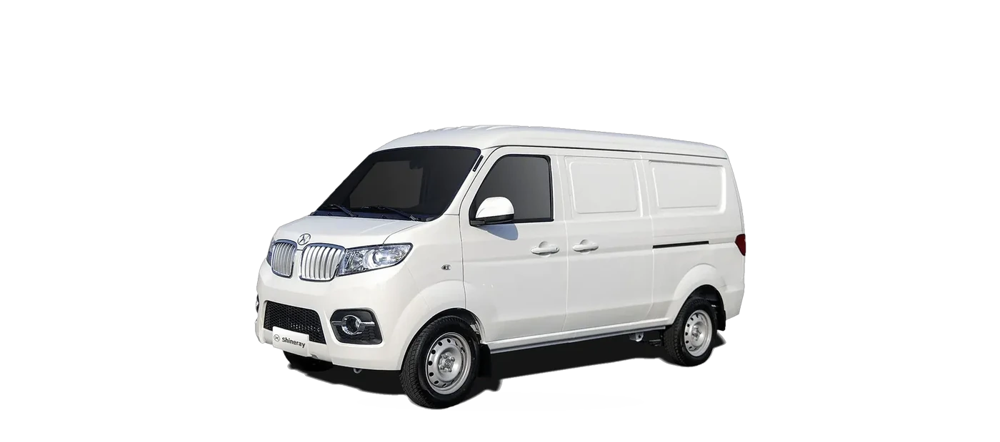
Shineray X30 Cargo Van
910 kg y cerca de 4.3 m³ cerrados. Para paquetería de última milla, farmacia, refacciones y todo lo que no puede mojarse ni verse desde la calle.
Precio de lista.
Lo que hace diferente a este modelo
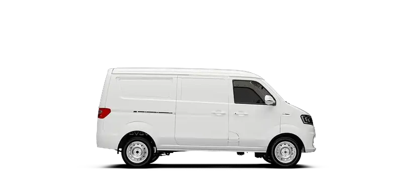
Carga cerrada, no a la vista
Cerca de 4.3 m³ bajo techo: paquetería, medicamento y refacciones no se mojan ni se ven desde la calle, a diferencia de una plataforma abierta.
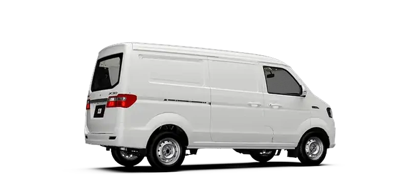
El de mejor rendimiento de la línea
16.3 km/L máximo. Menos cilindrada, menos consumo: la cargo van está pensada para volumen de última milla, no para tonelaje.
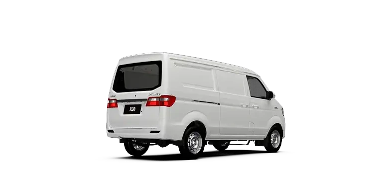
910 kg pensados para volumen, no peso
Motor de 102 hp, el más chico de los cuatro comerciales, porque mueve cajas y paquete, no material de construcción.
Para quién es
- Paquetería y última milla
- Farmacias y distribución de medicamento
- Refacciones y ferretería
- Servicio técnico a domicilio
Disponibilidad en Tepic
UNIDADES EN PISO · PENDIENTE
Publicamos existencias reales, no promesas. Si no la tenemos en piso te decimos el tiempo de entrega exacto antes de que dejes anticipo.
Preguntar existencia hoyFicha técnica completa
Datos de la ficha técnica oficial de Shineray Motors México. No inventamos cifras: si algo no aparece aquí es porque el fabricante no lo publica.
| Norma de emisiones | Euro VI |
|---|---|
| Longitud | 4,200 mm |
| Ancho | 1,680 mm |
| Altura | 1,930 mm |
| Distancia entre ejes | 2,700 mm |
| Caja de carga interior (L×A×A) | 2,215 × 1,480 × 1,310 mm |
| Volumen útil aproximado | ≈4.3 m³ (calculado con medidas interiores de ficha) |
| Peso en orden de marcha | 1,140 kg |
| Masa de carga nominal | 910 kg |
| Masa total máxima | 2,050 kg |
| Pasajeros | 2 |
| Neumáticos | 175/70 R14 |
| Motor | SWJ15 · 4 cilindros |
|---|---|
| Cilindrada | 1,499 cc |
| Combustible | Gasolina · 45 L |
| Potencia | 102 hp |
| Torque | 145 N·m @ 3,900 rpm |
| Transmisión | Manual de 5 velocidades + reversa |
| Rendimiento | 9.9 a 16.3 km/L |
| Suspensión delantera | McPherson |
|---|---|
| Suspensión trasera | Muelles de chapa de acero |
| Número de ballestas | –/5 |
| Freno delantero | Disco |
| Freno trasero | Tambor |
| Rueda | Rin de acero |
| ABS | Sí |
|---|---|
| ESC | Sí |
| Dirección asistida eléctrica (EPS) | Sí |
| Sensor de reversa y cámara trasera | Sí |
| Pantalla MP5 todo en uno | Sí |
| Faros antiniebla delanteros y traseros | Sí |
| Llaves | 2 mandos a distancia |
La X30 por dentro
Capacidad, volumen de carga y accesos, con la unidad abierta a cuadro.
Material de Shineray Motors México. No se descarga hasta que le das reproducir.
Galería
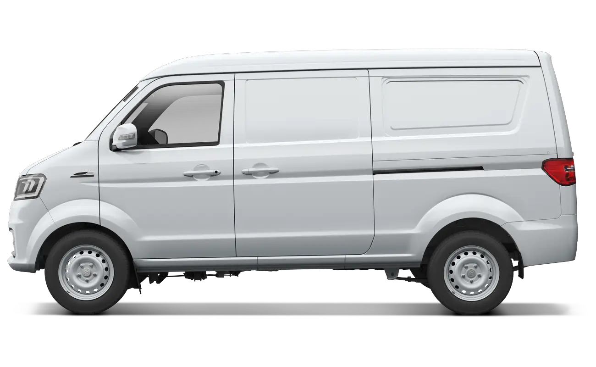
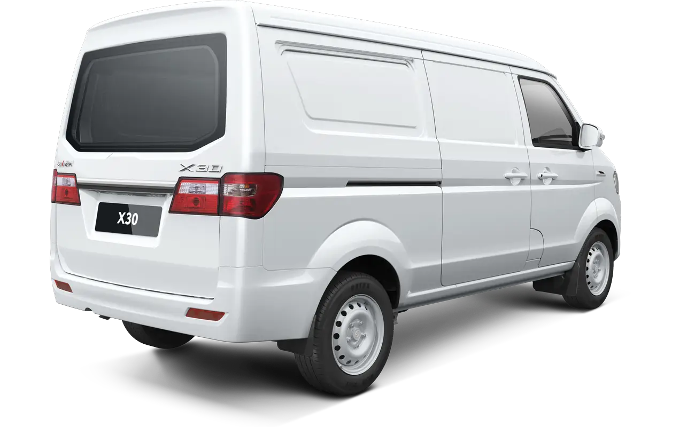
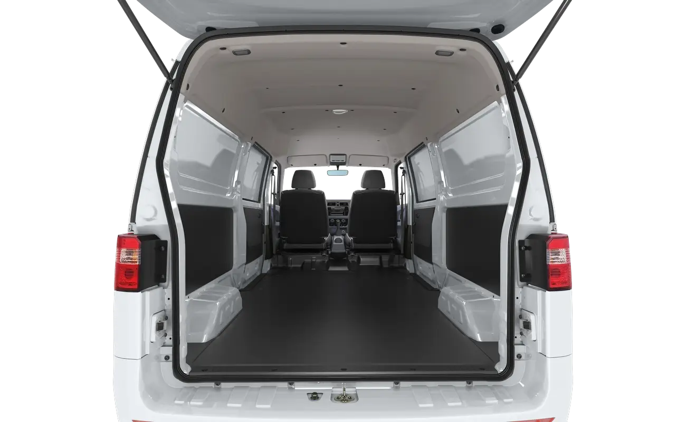
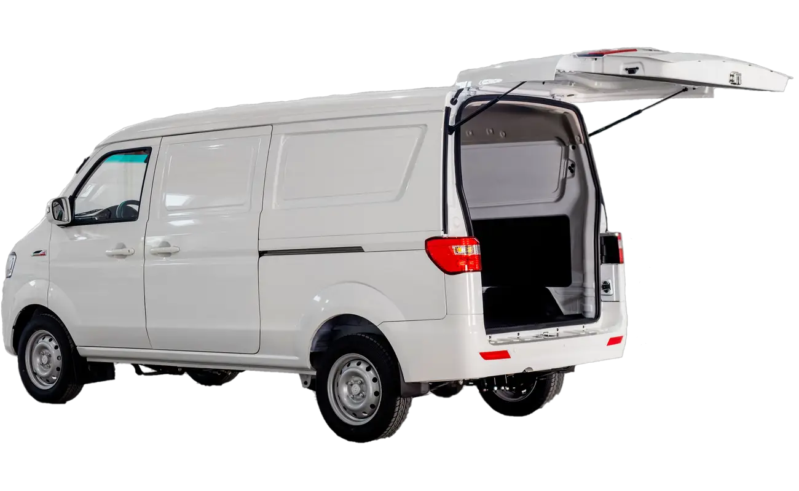
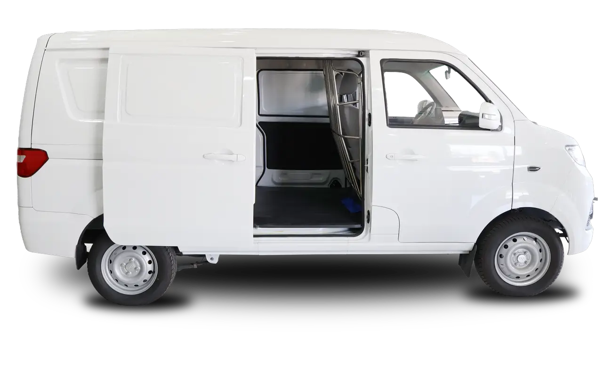
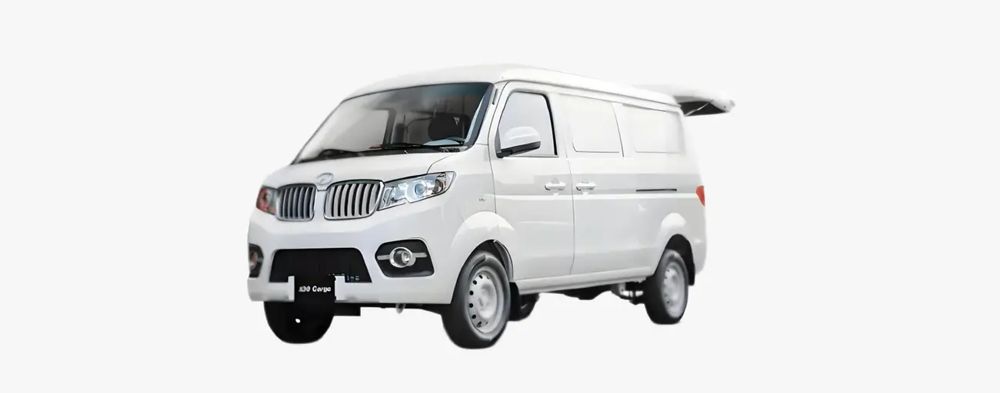
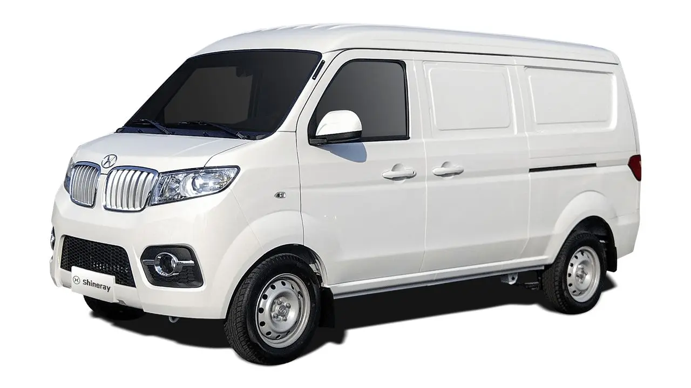
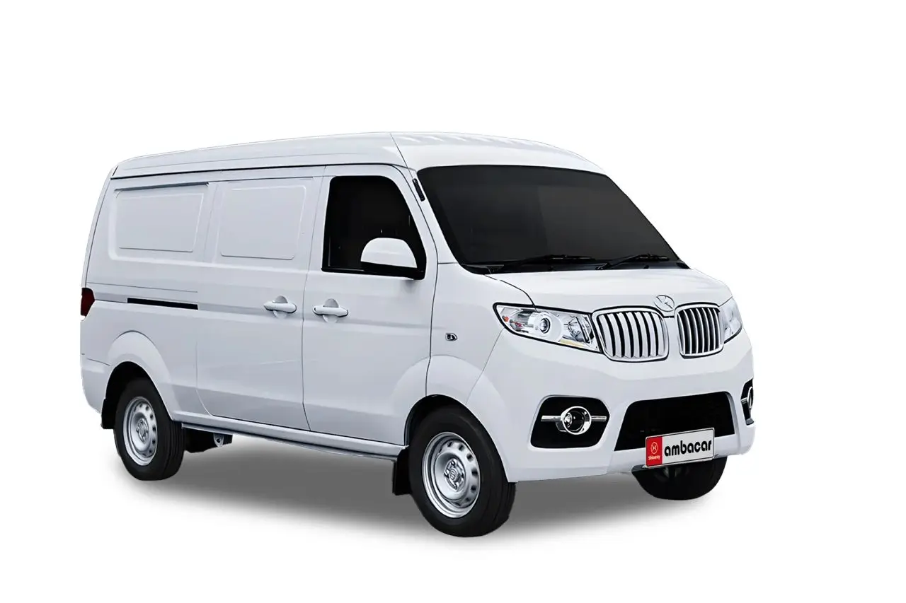
Garantía y taller, aquí en Tepic
La objeción real no es el precio: es «¿y si se descompone?». Esta es la respuesta, por escrito.
Cobertura de defectos de fabricación, mano de obra, materiales y componentes bajo condiciones normales de uso, a partir de la fecha de facturación. Válida ante cualquier distribuidor autorizado en la República Mexicana. Excluye corrosión por perforación de carrocería y oxidación de componentes. Consulta la póliza completa.
Leer la póliza de garantía completa (PDF) Shineray T30
Shineray T30 Shineray T32
Shineray T32 Shineray T50
Shineray T50 SWM G03F
SWM G03FHabla con un asesor de Tepic, no con un centro de llamadas
Te contesta alguien que está a menos de 20 minutos de ti y que sabe qué hay en piso hoy.